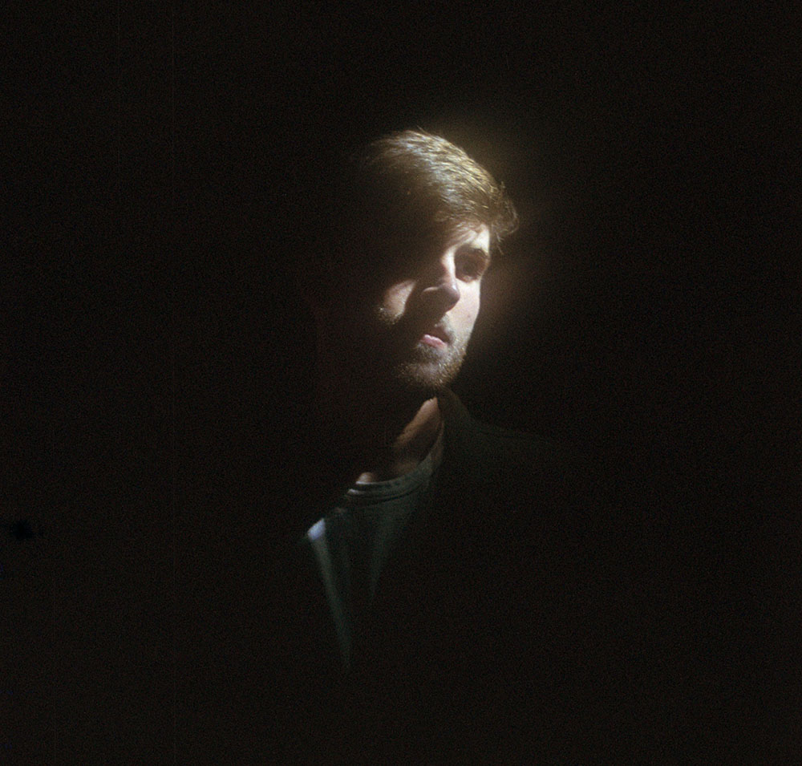

Joe Avio
Joe Avio
"Whatever Will We Do is if nothing else, a portrait of someone reluctantly stumbling through the early stages of adulthood. It's as much mine as anybody else's."

Models
Without Your Love
Waste
Worst In Me